Syncing the Blockchain (Kubernetes)
Last modified: 29-October-2025
Table of Contents
- Overview
- Synchronization Methods Comparison
- Method 1: Default Network Sync (P2P)
- Method 2: Seeding from Legacy SV Node
- Method 3: Seeding from Existing Teranode
- Recovery and Troubleshooting
- Monitoring and Verification
- Additional Resources
Overview
This guide covers the different methods available for synchronizing a Teranode instance with the Bitcoin SV blockchain using Kubernetes. Whether you're setting up a fresh node or recovering from downtime, this document will help you choose the most appropriate synchronization method for your situation.
Synchronization Methods Comparison
Choose the synchronization method that best fits your situation:
| Method | Use Case | Advantages | Disadvantages | Time Required |
|---|---|---|---|---|
| Default Network Sync | Fresh install, no existing data | • Simple setup • No additional requirements • Complete validation |
• Slowest method • High bandwidth usage |
5-8 days |
| Legacy SV Node Seeding | Have existing BSV node | • Faster than P2P • Proven data source • Reduced bandwidth |
• Requires SV Node setup • Additional export steps |
1 Hour (assumes SV node already in sync) |
| Teranode Data Seeding | Have existing Teranode | • Fastest method • Direct data transfer • Minimal processing |
• Requires access to existing data • Version compatibility needed |
1 Hour |

💡 Recommendation: For production deployments, we recommend using the Legacy SV Node seeding method when possible, as it provides the best balance of speed and data integrity verification.
Method 1: Default Network Sync (P2P)
This is the standard synchronization method where Teranode downloads the complete blockchain from other nodes in the network via peer-to-peer connections.
Prerequisites
- ✅ Teranode instance deployed and running
- ✅ Network connectivity to BSV peers
- ✅ Sufficient storage space (minimum 4TB with default prune settings of 288 blocks)
- ✅ Stable internet connection with adequate bandwidth
⚠️ Important: This method can take around 14 days depending on your network connection and hardware specifications.
Process Overview

Step 1: Initialize Sync Process
Upon startup, Teranode begins in IDLE state. You must explicitly set the state to legacysyncing to begin synchronization.
# Set FSM state to begin legacy syncing
kubectl exec -it $(kubectl get pods -n teranode-operator -l app=blockchain -o jsonpath='{.items[0].metadata.name}') -n teranode-operator -- teranode-cli setfsmstate --fsmstate legacysyncing
Step 2: Peer Discovery and Block Download
- Peer Connection: Teranode automatically discovers and connects to BSV network peers
- Block Requests: Downloads blocks sequentially from genesis, starting with the first available peer
- Legacy Mode: In
legacysyncingstate, connects to traditional BSV nodes for compatibility
Step 3: Validation and Storage
As blocks are received, multiple Teranode services work in parallel:
- Block Validation:
block-validatorservice validates block headers and structure - Subtree Validation:
subtree-validatorservice validates transaction subtrees - Storage:
blockchainservice stores validated blocks in the database - UTXO Updates:
assetservice maintains the UTXO set
Step 4: Monitor Progress
# View real-time sync logs
kubectl logs -n teranode-operator -l app=blockchain -f
# Check service health
kubectl get pods -n teranode-operator | grep -E 'aerospike|postgres|kafka|teranode-operator'
# Wait for services to be ready
kubectl wait --for=condition=ready pod -l app=blockchain -n teranode-operator --timeout=300s
# View blockchain info in the blockchain viewer (port forward if needed)
kubectl port-forward -n teranode-operator service/asset 8090:8090
# Then access http://localhost:8090/viewer in your browser
Expected Timeline
| Phase | Duration | Description |
|---|---|---|
| Initial Setup | 5-10 minutes | Peer discovery and connection establishment |
| Early Blocks | 1-2 days | Genesis to block ~500,000 (smaller blocks, faster processing) |
| Recent Blocks | 3-6 days | Block ~500,000 to current tip (larger blocks, slower processing) |
| Catch-up | Ongoing | Maintaining sync with new blocks |
📊 Performance Tip: Monitor your system resources during sync. CPU and I/O intensive operations are normal during this process.
Method 2: Seeding from Legacy SV Node
This method allows you to bootstrap a Teranode instance using data exported from an existing Bitcoin SV node (bitcoind). This significantly reduces synchronization time compared to P2P sync.
Prerequisites
- ✅ Access to a fully synchronized Bitcoin SV node (bitcoind)
- ✅ SV Node gracefully shut down (using
bitcoin-cli stop) - ✅ Fresh Teranode instance with no existing blockchain data (see reset guide to clear existing data if needed)
- ✅ Sufficient disk space for export files (~1TB recommended, temporary during process)
- ✅ Sufficient disk space for Teranode data (~10TB recommended, permanent)
- ✅ Kubernetes environment set up
⚠️ Critical: Only perform this operation on a gracefully shut down SV Node to ensure data consistency.
Overview
This process involves two main phases:
- Export Phase: Convert SV Node database data (UTXO set and headers) into a Teranode-compatible format
- Seeding Phase: Import the converted data files into Teranode
💡 What's happening: The
bitcointoutxosettool reads the SV Node's LevelDB database files (chainstateandblocks) and converts them into Teranode's native format for fast import.
Phase 1: Convert SV Node Data to Teranode Format
Step 1: Verify SV Node Requirements
Before proceeding with the export, ensure your Bitcoin SV node meets these critical requirements:
Data Location Requirements
- For this guide, we assume SV node data is located at
/mnt/bitcoin-sv-data - Replace this path with your actual SV node data directory in all commands
- Verify the directory contains both
blocksandchainstatesubdirectories
Node State Requirements
- ✅ SV Node must be completely stopped - Use
bitcoin-cli stopfor graceful shutdown - ❌ Node cannot be actively syncing - Export will fail if the node is processing blocks
- ❌ Node cannot have active network connections during export
Optional: Ensure Data Consistency
If you failed to stop gracefully, and you want to guarantee data consistency before export, you can start the SV node one final time in isolated mode:
# Start SV node in isolated mode (no network activity)
bitcoind -listen=0 -connect=0 -daemon
# Wait for any pending operations to complete (check logs)
tail -f ~/.bitcoin/debug.log
# Once stable, stop gracefully
bitcoin-cli stop
Critical Warning
The SV node must be completely stopped before proceeding. Active syncing or network activity during export will cause data corruption or export failure.
Step 2: Prepare Export Directory
# Create export directory
sudo mkdir -p /mnt/teranode/seed/export
sudo chown $USER:$USER /mnt/teranode/seed/export
Step 3: Export UTXO Data
# Export UTXO set from Bitcoin SV node
# Replace /mnt/bitcoin-sv-data with your actual SV node data directory
# Instead of latest, you could use a specific version of teranode.
# Check for tagged versions here ghcr.io/bsv-blockchain/teranode
docker run -it \
-v /mnt/bitcoin-sv-data:/home/ubuntu/bitcoin-data:ro \
-v /mnt/teranode/seed:/mnt/teranode/seed \
--entrypoint="" \
ghcr.io/bsv-blockchain/teranode:latest \
/app/teranode-cli bitcointoutxoset \
-bitcoinDir=/home/ubuntu/bitcoin-data \
-outputDir=/mnt/teranode/seed/export
Expected Output Files:
{blockhash}.utxo-headers- Block headers data{blockhash}.utxo-set- UTXO set data
Step 4: Verify Export
# Check exported files
ls -la /mnt/teranode/seed/export/
# You should see .utxo-headers and .utxo-set files
🔧 Troubleshooting: If you encounter a
Block hash mismatch between last block and chainstateerror, restart your SV Node once more withbitcoin-cli stopfollowed by a clean restart.
⚠️ Important: Cleanup for Retries
If you encounter issues during export or need to retry the process:
- Clear the export directory completely:
sudo rm -rf /mnt/teranode/seed/export/*
-
Reset the target Teranode instance (see reset guide)
-
Verify SV node was gracefully shutdown and repeat from Step 1
Important for Retries
Partial or corrupted export files can cause seeding failures. Always start with a clean export directory and fresh Teranode instance when retrying.
Phase 2: Seed Teranode with Exported Data
Critical Service Requirements
During the seeding process, only the following services should be running for Teranode:
- Aerospike (database)
- Postgres (database)
- Kafka (messaging)
All other Teranode services must be stopped (blockchain, asset, blockvalidation, etc.) to prevent conflicts during data import.
Network Configuration Alignment
The export and import target networks must be consistent:
- If SV node was running mainnet, Teranode must be configured for mainnet
- If SV node was running testnet, Teranode must be configured for testnet
- Check development configurations - Some setups may be set to "regtest" mode
- Verify network settings in Teranode configuration before proceeding with Step 1
Mismatched networks will cause seeding failure or data corruption.
Step 1: Prepare Teranode Environment
You can scale down the Teranode services using the spec.enabled option in the CR:
---
apiVersion: teranode.bsvblockchain.org/v1alpha1
kind: Cluster
metadata:
name: teranode-cluster
spec:
enabled: false
alertSystem:
...
kubectl apply -f <path-to-your-cr-file>.yaml
# Verify pods are terminated
kubectl get pods -n teranode-operator
Step 2: Identify the Block Hash
Before running the seeder, you need to identify the correct block hash from your exported files:
# List the exported files to see the block hash
ls -la /mnt/teranode/seed/export/
# You should see files like:
# 0000000000013b8ab2cd513b0261a14096412195a72a0c4827d229dcc7e0f7af.utxo-headers
# 0000000000013b8ab2cd513b0261a14096412195a72a0c4827d229dcc7e0f7af.utxo-set
Understanding the Hash Parameter
The -hash parameter specifies the block hash of the last block in the exported UTXO set. This hash:
- Identifies the exported files - Files are named
{blockhash}.utxo-headersand{blockhash}.utxo-set - Represents the blockchain tip at the time of export from the SV node
- Must match exactly with the filenames in your export directory
How to find it: Extract the hash from your exported filenames (the part before .utxo-headers or .utxo-set)
Step 3: Run Seeder
# Create a temporary seeder pod
# Instead of latest, you could use a specific version of teranode.
# Check for tagged versions here ghcr.io/bsv-blockchain/teranode
kubectl run teranode-seeder \
--image=ghcr.io/bsv-blockchain/teranode:latest \
--restart=Never \
--rm -i --tty \
-n teranode-operator \
-- /app/teranode-cli seeder \
-inputDir /mnt/teranode/seed/export \
-hash 0000000000013b8ab2cd513b0261a14096412195a72a0c4827d229dcc7e0f7af
Step 4: Monitor Seeding Progress
# Monitor seeder logs
kubectl logs -f teranode-seeder -n teranode-operator
Step 5: Start Teranode Services
After successful seeding:
# Re-enable the cluster in the CR
kubectl patch cluster teranode-cluster -n teranode-operator --type=merge -p '{"spec":{"enabled":true}}'
# Wait for pods to be ready
kubectl wait --for=condition=ready pod -l app=blockchain -n teranode-operator --timeout=300s
# Verify all pods are running
kubectl get pods -n teranode-operator
Expected Timeline
| Phase | Duration | Description |
|---|---|---|
| Export | 2-4 hours | Extracting UTXO set from SV Node |
| Seeding | 4-8 hours | Importing data into Teranode |
| Verification | 30 minutes | Starting services and verifying sync |
| Total | 1-12 hours | Complete process |
💾 Storage Note: The seeder writes directly to Aerospike, PostgreSQL, and the filesystem. Ensure your environment variables and volume mounts are correctly configured.
Method 3: Seeding from Existing Teranode
This is the fastest synchronization method, using UTXO set and header files from an existing Teranode instance. This method is ideal when you have access to another synchronized Teranode node.
Prerequisites
- ✅ Access to a synchronized Teranode instance
- ✅ UTXO set files from Block/UTXO Persister
- ✅ Fresh target Teranode instance with no existing blockchain data (see reset guide to clear existing data if needed)
- ✅ Network access between source and target systems
- ✅ Sufficient storage for data transfer
Overview
This method uses the same seeder tool as Method 2, but with data files generated by Teranode's Block Persister and UTXO Persister services instead of exporting from a legacy SV node.
Step 1: Locate Source Data
On your source Teranode instance, locate the persisted data files:
# Typical locations for persisted data in Kubernetes deployments
kubectl exec -it <blockchain-pod> -n teranode-operator -- ls -la /app/data/blockstore/
Required Files:
{blockhash}.utxo-headers- Block headers{blockhash}.utxo-set- UTXO set data
Step 2: Make Data Available
Ensure the required UTXO files are available in your target Teranode's export directory:
# Target location for the files
/mnt/teranode/seed/export/{blockhash}.utxo-headers
/mnt/teranode/seed/export/{blockhash}.utxo-set
Data Transfer
Use your preferred method to transfer the files from the source Teranode to the target location (scp, rsync, container volumes, shared storage, etc.).
Step 3: Run Seeder
Use the same seeder process as described in Method 2:
# Scale down services
kubectl patch cluster teranode-cluster -n teranode-operator --type=merge -p '{"spec":{"enabled":false}}'
# Run seeder
# Instead of latest, you could use a specific version of teranode.
# Check for tagged versions here ghcr.io/bsv-blockchain/teranode
kubectl run teranode-seeder \
--image=ghcr.io/bsv-blockchain/teranode:latest \
--restart=Never --rm -i --tty \
-n teranode-operator \
-- /app/teranode-cli seeder \
-inputDir /mnt/teranode/seed/export \
-hash <blockhash-from-filename>
Expected Timeline
| Phase | Duration | Description |
|---|---|---|
| Data Transfer | 1-3 hours | Copying files between systems |
| Seeding | 2-4 hours | Importing data into target Teranode |
| Verification | 15 minutes | Starting services and verification |
| Total | 1-6 hours | Complete process |
⚡ Speed Advantage: This method is typically 2-3x faster than Method 2 since the data is already in Teranode's optimized format.
Recovery and Troubleshooting
Teranode is designed for resilience and can recover from various types of downtime or disconnections. This section covers different recovery scenarios and troubleshooting approaches.
Normal Recovery (Short Downtime)
For brief interruptions (minutes to hours), Teranode typically recovers automatically.
Automatic Recovery Process
-
Service Restart
- Kubernetes automatically restarts crashed pods via ReplicaSet controllers
-
Peer Reconnection
- The
peerservice re-establishes network connections - Automatic discovery of available BSV network peers
- The
-
Block Catch-up
- Node determines last processed block height
- Requests missing blocks from peers automatically
- Processes blocks sequentially to catch up
Monitor Normal Recovery
# Check pod status and restarts
kubectl get pods -n teranode-operator -o wide
# View recovery logs
kubectl logs -n teranode-operator -l app=blockchain -f --tail=100
# Check for pod events and issues
kubectl describe pod -n teranode-operator -l app=blockchain
# View sync progress in blockchain viewer (port forward if needed)
kubectl port-forward -n teranode-operator service/asset 8090:8090
# Then access http://localhost:8090/viewer in your browser
Extended Downtime Recovery
For longer outages (days to weeks), additional considerations apply.
Assessment Phase
Step 1: Check Data Integrity
# Examine logs for corruption warnings
kubectl logs -n teranode-operator -l app=blockchain --previous | grep -i "corrupt\|error\|fail"
# Check database connectivity
kubectl exec -it <blockchain-pod> -n teranode-operator -- teranode-cli settings | grep -E "postgres\|aerospike"
Step 2: Evaluate Catch-up Requirements
# Check current block height vs network tip using the blockchain viewer
kubectl port-forward -n teranode-operator service/asset 8090:8090
# Then access http://localhost:8090/viewer in your browser
# Compare the displayed height with a block explorer
# If >10,000 blocks behind, consider reseeding
Recovery Options
| Blocks Behind | Recommended Action | Expected Time |
|---|---|---|
| < 1,000 | Normal catch-up | 1-4 hours |
| 1,000 - 10,000 | Monitor catch-up progress | 4-24 hours |
| > 10,000 | Consider reseeding (Method 2 or 3) | 6-12 hours |
Manual Intervention Steps
Option 1: Force Catch-up
# Reset FSM state and restart sync
kubectl exec -it <blockchain-pod> -n teranode-operator -- teranode-cli setfsmstate --fsmstate legacysyncing
# Monitor progress closely
kubectl logs -n teranode-operator -l app=blockchain -f
Option 2: Reseed from Recent Data
If catch-up is too slow, use Method 2 or Method 3 from this guide with recent data.
Troubleshooting Common Issues
Issue: Sync Stalled
Symptoms: - Block height not increasing - No new blocks being processed - Peer connections established but inactive
Solutions:
# Check peer connections
kubectl exec -it <blockchain-pod> -n teranode-operator -- teranode-cli getpeerinfo
# Restart peer service
kubectl delete pod -n teranode-operator -l app=peer
# Reset FSM state
kubectl exec -it <blockchain-pod> -n teranode-operator -- teranode-cli setfsmstate --fsmstate legacysyncing
Issue: Database Connection Errors
Symptoms: - Connection timeouts to PostgreSQL/Aerospike - "Database unavailable" errors in logs
Solutions:
# Check database pod status
kubectl get pods -n teranode-operator | grep -E "postgres\|aerospike"
# Test database connectivity
kubectl exec -it postgres-pod -n teranode-operator -- psql -U <username> -d <database> -c "SELECT 1;"
# Restart database pods if needed
kubectl delete pod -n teranode-operator -l app=postgres
Issue: Storage Space Exhausted
Symptoms: - "No space left on device" errors - Pods in CrashLoopBackOff state
Solutions:
# Check storage usage
kubectl exec -it <blockchain-pod> -n teranode-operator -- df -h
# Clean up old logs (if applicable)
kubectl exec -it <blockchain-pod> -n teranode-operator -- find /app/logs -name "*.log" -mtime +7 -delete
# Scale up storage (requires cluster admin)
# Consider implementing log rotation
Performance Monitoring During Recovery
Key Metrics to Watch
- Block Processing Rate: Blocks per minute
- Peer Connection Count: Active peer connections
- Database Performance: Query response times
- Storage I/O: Disk read/write rates
- Memory Usage: RAM consumption patterns
Monitoring Commands
# Monitor block height progress via blockchain viewer
kubectl port-forward -n teranode-operator service/asset 8090:8090
# Then access http://localhost:8090/viewer in your browser
# Monitor resource usage
kubectl top pods -n teranode-operator
# Check service health endpoints
kubectl exec -it <blockchain-pod> -n teranode-operator -- curl -s http://localhost:8000/health
📈 Tip: Use monitoring tools like Prometheus and Grafana to track recovery progress and estimate completion times. Set up alerts for stalled sync or resource exhaustion.
Monitoring and Verification
After completing synchronization using any method, it's important to verify that your Teranode instance is properly synchronized and functioning correctly.
Verification Checklist
✅ Basic Connectivity
# Check if services are running
kubectl get pods -n teranode-operator
# All pods should be in "Running" status
# Test CLI connectivity
kubectl exec -it <blockchain-pod> -n teranode-operator -- teranode-cli getfsmstate
✅ Synchronization Status
# Check current block height using blockchain viewer
kubectl port-forward -n teranode-operator service/asset 8090:8090
# Then access http://localhost:8090/viewer in your browser
# Compare with network tip (use block explorer or other nodes)
# Heights should match within 1-2 blocks
✅ Peer Connections
# Verify peer connections
kubectl exec -it <blockchain-pod> -n teranode-operator -- teranode-cli getpeerinfo | grep -E "addr|version"
# Should have 8+ active peer connections
✅ Database Health
# Check PostgreSQL connectivity
kubectl exec -it <postgres-pod> -n teranode-operator -- psql -U <username> -d <database> -c "SELECT COUNT(*) FROM blocks;"
# Check Aerospike connectivity
kubectl exec -it <aerospike-pod> -n teranode-operator -- asinfo -v "statistics" | grep "objects"
✅ FSM State
# Verify FSM is in correct state
kubectl exec -it <blockchain-pod> -n teranode-operator -- teranode-cli getfsmstate
# Should show "running" or "synced" for a fully synchronized node
Ongoing Monitoring
Daily Health Checks
#!/bin/bash
# Save as teranode-health-check.sh
echo "=== Teranode Health Check ==="
echo "Timestamp: $(date)"
# Check pod status
echo "\n--- Pod Status ---"
kubectl get pods -n teranode-operator
# Check block height via blockchain viewer
echo "\n--- Block Height ---"
echo "View at http://localhost:8090/viewer (port-forward if needed)"
kubectl port-forward -n teranode-operator service/asset 8090:8090 &
# Check peer count
echo "\n--- Peer Count ---"
kubectl exec -it <blockchain-pod> -n teranode-operator -- teranode-cli getpeerinfo | wc -l
# Check FSM state
echo "\n--- FSM State ---"
kubectl exec -it <blockchain-pod> -n teranode-operator -- teranode-cli getfsmstate
Performance Metrics
# Monitor resource usage
kubectl top pods -n teranode-operator
# Check storage usage
kubectl exec -it <blockchain-pod> -n teranode-operator -- df -h
# Monitor network traffic
kubectl exec -it <blockchain-pod> -n teranode-operator -- netstat -i
Log Analysis
# Check for errors in recent logs
kubectl logs -n teranode-operator -l app=blockchain --tail=1000 | grep -i error
# Monitor sync progress
kubectl logs -n teranode-operator -l app=blockchain -f | grep -E "height|block|sync"
# Check for warnings
kubectl logs -n teranode-operator -l app=blockchain --tail=1000 | grep -i warn
Additional Resources
Documentation
- Teranode CLI Reference - Complete CLI command reference
- Reset Teranode (Kubernetes) - How to reset Kubernetes deployments
- Seeder Command Details - Advanced seeder configuration
- UTXO Persister Service - UTXO persistence configuration
- UTXO Store Documentation - UTXO storage mechanisms
Installation and Configuration
- Kubernetes Installation - Kubernetes deployment
- Kubernetes Configuration - Kubernetes configuration guide
- Third Party Requirements - External dependencies
Support and Community
For additional support:
- Check Logs: Always start with examining service logs
- Documentation: Review related documentation sections
- Community Forums: Search existing discussions and solutions
- Issue Reporting: Report bugs with detailed logs and reproduction steps